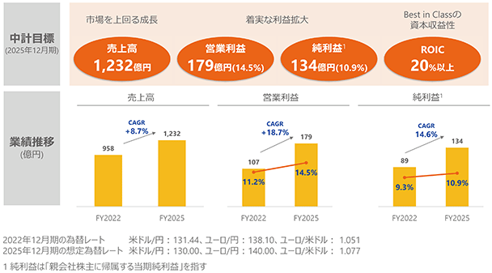
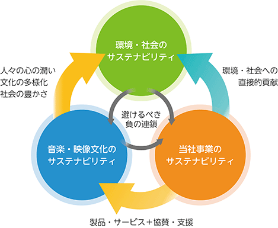
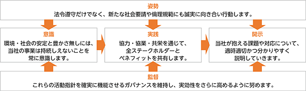
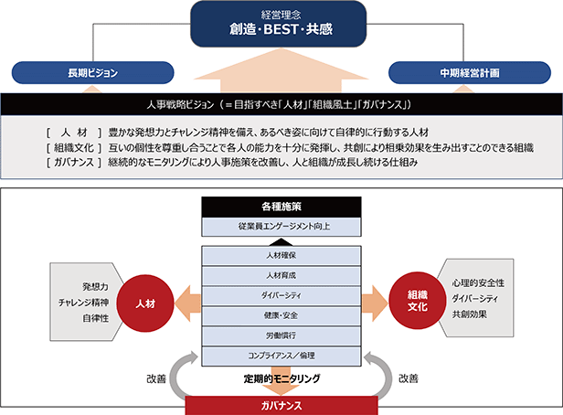
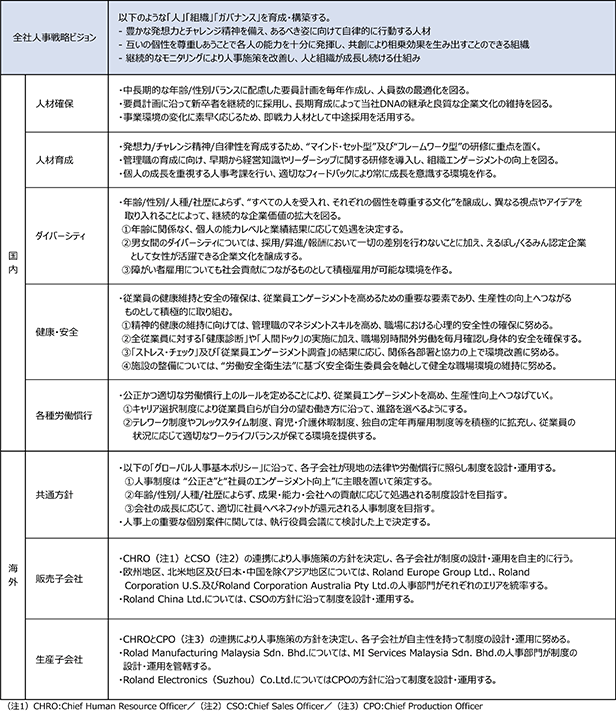
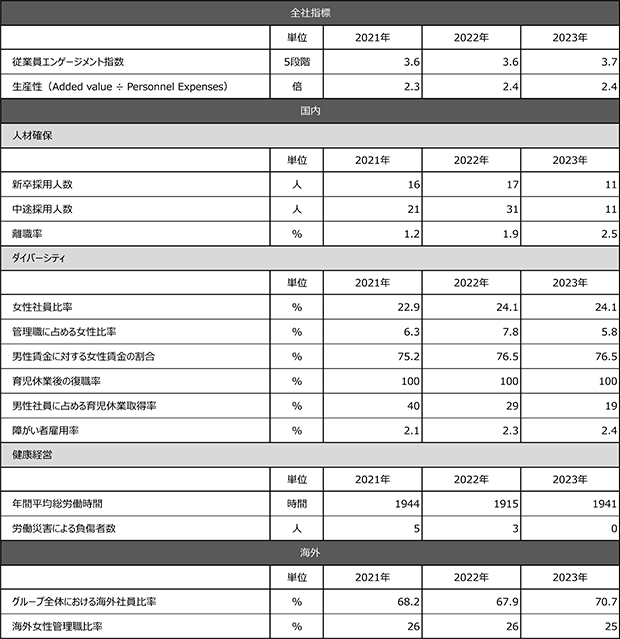
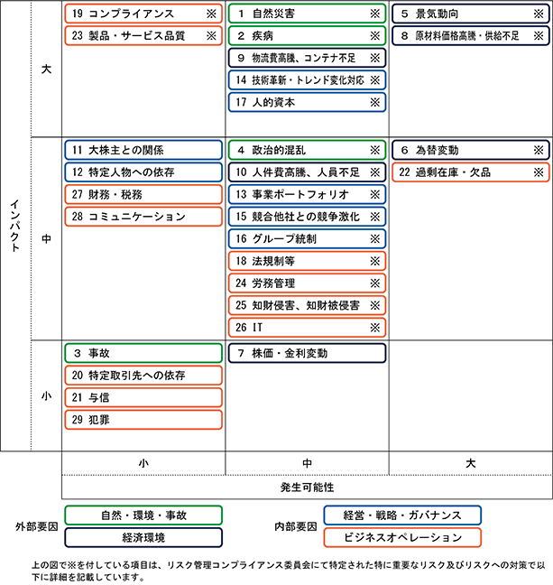

当社グループは、2023年1月からの3年間を対象とした中期経営計画を策定しました。なお、文中の将来に関する事項は、当連結会計年度末現在において、当社グループが判断したものです。
ローランド・グループの経営理念は、以下の3つのスローガンに集約されています。これらは、ローランド・グループが何のために存在し、どのような企業であろうとしているのかを表した、創業時から変わらない考え方です。
－ 創造の喜びを世界にひろめよう
－ BIGGESTよりBESTになろう
－ 共感を呼ぶ企業にしよう
「創造の喜びを世界にひろめよう」
いつでも、誰でも、どこにいても、自分にあった音や映像の楽しみ方に一人でも多くの人がめぐり合える。そんなワクワクする世界の実現を、私たちは目指します。新たな作品を創りだす喜び、仲間たちと楽器を演奏する時の充実感、そして、それを多くの人と分かち合うひととき―無限に拡がる喜びの可能性を、追求し続けます。
「BIGGESTよりBESTになろう」
お客様一人ひとりにとって、常にBESTで特別な企業であること。私たちはそのためにたゆまず努力し、最善を尽くします。日々成長し続け、お客様の想いにこたえる。そしてまた、新たな夢や期待を寄せていただく。そんな信頼関係を大切にしていきます。
「共感を呼ぶ企業にしよう」
私たちは、支えていただいているお客様、取引先様、そして株主様など多くの方々に愛され、応援される企業を目指します。新しい価値を創り出す中においてもこうした方々の信頼を決して裏切らず、事業活動をよりよく理解していただく。そうして皆様からの共感を力にかえ、すべてのステークホルダーにとっての事業価値を持続的に向上させていきます。
(2) 事業環境・重要課題認識
当社グループの属する世界楽器市場は、海外市場を成長ドライバーとして、概ね１％〜３％程度の安定的な成長を続けてきましたが、近年では、新型コロナウイルス感染症の世界的な蔓延に端を発した不透明感の強い事業環境が続いています。需要面では、Stay at Home需要により、いずれのカテゴリーにおいてもコロナ前より一段切りあがった需要が生み出されましたが、電子ピアノにおいては急激に拡大した需要からの反動減も見られます。また、成長市場であった中国においては、新型コロナウィルス感染症や児童教育に関する政策影響からの回復に想定以上の時間を要しています。これに対し、供給面における各種原材料の調達や生産、物流などへの制約とその後の挽回生産による供給過剰が需要バランスの崩れに繋がり、市場在庫の調整が継続している状況です。
これらの不透明感の強い事業環境は世界楽器市場の成長にも影響するものの、長期安定成長を続けている楽器市場においては一時的であり、調整局面が落ち着く2025年からは再び成長軌道に回帰すると考えられます。新型コロナウィルス感染症の世界的な蔓延をきっかけとした新しいライフスタイルの定着は、余暇時間で楽器演奏に挑戦する方、楽器演奏を再開される方の増加に繋がりました。加えてSNSやWeb配信の普及により、音楽は「聴く」だけのものから「創る」ものへと変化を遂げています。このような市場の変化は、いつでもどこでも一人でも気軽に演奏を始められる、さまざまな楽しみ方が広がる電子楽器にとって、重要な成長機会になると期待されます。
＜中期経営計画2023-2025基本方針と主要施策＞
① 需要創造：Game Changerによる市場創造と潜在顧客へのアプローチ
・Game Changer製品・サービス・新製品による市場創造
前中計に引き続き、Game Changer製品による新たな市場創造を目指します。eスポーツやポータブル・キーボードなどのポテンシャル市場への新製品投入、Drum Workshop社（以下DW社）との技術シナジー創出など、当社ならではの付加価値の高いGame Changer製品の開発を積極的に推し進めます。また、新製品割合を2025年には全体の約1/4を占めるまでに高め、不確実な環境下でも売上と利益を創出します。
・潜在的な顧客獲得によるビジネス拡大（ピアノ・ドラム）
＜ピアノ＞
新しく楽器を始めるエントリー層に向けて、新規チャネルの開拓と購入しやすいモデルの拡大を行います。また、さらなる楽器としての機能の向上や、デザイン性の向上により、アコースティックピアノユーザーを含む多くの方々に満足いただけるような楽器を生み出します。
＜ドラム＞
DW社とのシナジー創出を本格化し、既存の各ドラム市場（電子、アコースティック）の拡大だけではなく、両者が相まったハイブリッド市場をさらに拡大します。さらに、Roland Cloudから、ピアノ、ドラムの演奏を楽しむためのコンテンツやサービスを提供します。
② シェア拡大：ポータブル・キーボード市場への再参入と新興国での販売拡大、Roland Retailによるシェア拡大
・当社にとっての新市場への挑戦と、新興国での販売拡大
＜ポータブル・キーボード＞
大きな市場でありながら、当社にとって未開拓市場であるポータブル・キーボード市場に本格的に再参入し、製品拡充とRoland Cloudによる差別化を図ります。
＜新興国＞
膨大な人口増を背景に中間層の購買力増加が続く中国・インド・インドネシアを注力市場と定め、販売体制を整えることでシェアを拡大します。
・Roland Retailの強化により、顧客接点の“質”と“量”を向上
世界の主要都市に設置するRoland Direct Store、販売店様店舗における当社専用の販売スペースであるStore in Store、そしてRoland Direct ECなどの販売チャネルを通じて顧客と当社が直接つながり、接点の質、量の向上に取り組みます。
③ LTV（ライフタイムバリュー）向上：音楽を生涯楽しんでいただくための仕組みづくり
・Roland Cloud：「いつでも、どこでも、誰でも」楽しめる、パーソナライズされた体験サービスへ
クラウド型音源サービスRoland Cloudは、サービスを通して生涯顧客を生み出す仕掛けに進化します。現中計期間では、対象楽器の拡大やラーニングやストリーミングに対応したサービスをRoland Cloud上で提供し、さらなる付加価値向上に取り組みます。
・Roland Platform：
顧客理解により、製品やサービスを充実させ、マーケティングを最適化するための強力なエンジン
顧客データの一元管理を行うRoland Platformを起点にして、当社による顧客の理解、製品やサービスの充実化、マーケティングを通した顧客とのコミュニケーション向上を行います。Roland Platformを介して顧客とローランドが繋がることで、顧客ごとに最適化された新しい音楽体験を生み出していきます。
・ブランディングの強化：ブランド認知度向上により、より多くの音楽愛好家に愛されるブランドになる
さまざまなデジタルツールの活用やアーティスト、インフルエンサーとの関係強化などのマーケットコミュニケーションの強化により、当社のブランドストーリーを伝える活動を強化します。
④ 基盤強化：長期ビジョン実現に向けた人的資源活性化とインフラ投資
・グローバル人事
グローバルでの適材適所の人材配置や、株式報酬制度のグローバル展開といった人事体制の拡充に努め、人と組織の活性化を行います。
・基盤強化
ビジネスのさらなる拡大に向けた基幹システム更新や事業所再編、本社と海外子会社の連携強化など当社の成長を支えるインフラへの投資を加速します。
・サプライチェーンの高度化
販売機会ロスの低減やリードタイム短縮、オートメーションの推進・新システム導入によるアジリティ強化に取り組みます。また、中長期では、DW社との生産拠点の相互活用や技術の融合、半製品の共通化などの推進により、生産能力と生産技術の向上、利益改善に取り組みます。
⑤ 財務目標

当社グループは、ESG（環境・社会・ガバナンス）やSDGs（持続可能な開発目標）の視点に代表される「サステナビリティ（持続可能性）」への取り組みにあたり、以下の認識のもと、環境・社会を含むすべてのステークホルダーの期待に応え、事業成長にもつながるテーマを中心に重要課題を整理しました。＜5つの活動指針＞で示すとおり一貫した「姿勢」で「意識」「実践」「開示」を一連のものとして課題対応を進め、取締役会が定期的な報告を受けてその状況を「監督」し、必要に応じて助言と支援を行います。
なお、文中の将来に関する事項は、当連結会計年度末現在において当社グループが判断したものです。
(1) サステナビリティの取組
当社の事業は、音楽・映像文化を通じて社会の持続的発展に貢献している一方で、環境や社会全体の安定と豊かさのもとに成り立っています。そして気候変動や人権などのさまざまな課題に真摯に向き合い、その解決に貢献することは企業としての重要な責務であると認識しています。
環境・社会の安定や持続性が損なわれ、音楽・映像文化や当社事業が存続しえなくなる負の連鎖を避けるため、それぞれのサステナビリティを高め合う好循環を生み出す活動を、経営の重要課題に位置付け、取り組んでいます。

(2) 活動指針
当社グループでは、以下の活動指針を定め、音楽・映像文化の発展のために「創造」の価値を提供し続け、全ステークホルダーから「共感」いただける取り組みを通じて、地球環境・社会の課題解決と事業成長の両立に「BEST」を尽くします。
＜5つの活動指針＞

(3) 重要課題
(4) 気候変動への対応(TCFD提言に沿った情報開示)
当社グループは、地球温暖化に伴う異常気象や災害の発生などの現象は、経済的損失につながるだけでなく、人類の文化的な営みや生活様態にまで深刻な影響を与える可能性があることを認識しています。人々が安心して暮らし、音楽・映像をはじめとした芸術文化が育まれる社会環境を維持するために、CO2排出量削減につながる貢献策や事業活動の効率化に取り組んでいます。
また、気候変動によって生じる当社事業に対するリスクや機会を適切に評価し対応を進め、TCFD（Task Force on Climate-related Financial Disclosures：気候変動関連財務情報開示タスクフォース）のフレームワークに沿って、「ガバナンス」「戦略」「リスク管理」「指標及び目標」の4つの観点から、その状況を開示していきます。
ガバナンス
サステナビリティを巡る課題全般への対応として、取締役会がサステナビリティ基本方針と特定した重要課題を承認し、その取り組みの状況について定期的に報告を受けて監督する体制を定めています。気候変動問題を含む主要課題への取り組みはテーマ別の分科会で企画・実行され、社長を含む全執行役員で構成する「サステナビリティ推進委員会」がその推進状況を確認・協議することで、それぞれの執行部門への的確な指示と取締役会への定期報告の両方を担保する体制としています。ガバナンス体制については、「第４ 提出会社の状況 ４ コーポレート・ガバナンスの状況等（1）コーポレート・ガバナンスの概要 企業統治の模式図」に記載のとおりです。
戦略
IPCC（気候変動政府間パネル）やIEA（国際エネルギー機関）等が発行する報告書における複数のシナリオを参照し、以下の２つの対照的なシナリオを用いました。その想定から、当社事業に対する気候変動のリスクと機会について一定程度の発生可能性（確信度）が見込まれるものを特定し、それが顕在化する時期と財務影響を評価しました。
・ 1.5℃シナリオ：パリ協定での合意を踏まえ、脱炭素への取り組みが世界的に最も進む想定
- 産業構造やエネルギー政策が大幅に転換する過程で規制等が増加する「移行リスク」が高まる可能性があります。
- 当社事業は産業構造の転換や活動規制の影響は受けにくいものの、炭素税や排出権取引などのカーボンプライシングが企業全般を対象として導入された際には、その影響を受ける可能性があります。
・ 4℃シナリオ：世界的に気候変動対策が十分に進展せず、現構造のまま経済活動が継続される想定
- 気候変動が進行し自然環境の変化や災害が増加する「物理的リスク」が高まる可能性があります。
- 当社事業は自然資源(水や無垢木材)の使用は少なくその影響は受けないものの、突発的な自然災害によって事業の操業に影響を受ける可能性があります。しかし慢性的な影響までは見込んでいません。
＜特定した気候変動リスク／機会の評価＞
(注)1. 「短期」は1年以内、「中期」は5年以内、「長期」は5年超としています。
2. 単年度で5億円±2億円の損益影響を「中」程度とし、その上下をそれぞれ「大」「小」としています。
リスク管理
当社事業を取り巻く様々なリスクに対し的確な管理・実践を行うために、定期的に子会社を含むグループ全体より潜在リスク情報を集約し、社長がリスク管理責任者として委員長を務める「リスク管理・コンプライアンス委員会」においてその影響の重要度と対応方針を評価しています。また当委員会で評価されたリスクの内容は定期的に取締役会に報告されています。
気候変動で生じる移行リスクや物理的リスクについては、発生事象や対応策が既知の事業リスクと共通する点も多いため、上記の全社的リスク管理プロセスに統合する運用を行っています。
指標及び目標
当社グループでは2021年度よりCO2排出量の算定を行っており、その結果を以下の当社ホームページにて公開しています。
主力となる当社の電子楽器は総じて省電力であり、お客様の要望や環境への貢献を念頭に更なる使用電力低減に継続的に取り組んでいます。また、日本、マレーシア、中国にある自社工場は大量の電力を必要としない組立工程が中心であり、さらに非化石価値を利用することで、スコープ2に相当するCO2の排出量を大幅に低減しています。サプライチェーン全体においては、自社だけでなく取引先も含めたCO2排出量削減や再生可能エネルギーの活用を着実に進めていきます。
現在計画している新本社社屋については、既存の建物を再利用することで、建設・解体時に発生するCO2排出量を大きく減らすことが可能であり、新築する場合に比べ約60％の削減効果が見込めます（当社推定）。
当社グループが責任をもって上述の取り組みを実行するために、CO2排出量算定の精度向上と要因の分析を行い、2050年のカーボンニュートラルを意識したうえで、明確な根拠に基づく「指標及び目標」を設定していきます。
(5) 人的資本経営への取組
ガバナンス
当社グループは、人事戦略をグループレベルで策定・実行・牽引するためにCHRO(Chief Human Resource Officer)を設置しています。CHROは、国内外における「従業員エンゲージメント」「生産性」「各種指標」の動向を常に確認しつつ、国内人事部門及び海外人事部門との定例会議により全社の状況を把握し、必要に応じて指示及びアドバイスを行っています。また、重要な人事案件は執行役員会で討議し、人事政策の見直しを図っています。
なお、役員の選解任及び報酬制度・報酬金額については、指名報酬委員会での討議を経て取締役会へ上程しています。
戦略
＜経営戦略と人的資本戦略＞
当社グループでは、以下の「経営理念」「長期ビジョン」「中期経営計画」を実現するにあたり、＜人の成長と組織の活性化＞を最重要テーマの一つと位置づけ、各種人事施策に取り組んでいます。
経営理念 ：創造の喜びを世界にひろめよう／BIGGESTよりBESTになろう／共感を呼ぶ企業にしよう
長期ビジョン ：The World Leader in Music Creation
中期経営計画 ：Create Fans For Life!
このことから、当社人事戦略における最重要ポイントは、各従業員が「豊かな発想とチャレンジ精神を持って自発的に創造性を発揮すること」及び従業員を取り巻く組織文化が「個々の従業員の多様性を受け入れ、共創的な交わりにより相乗効果を導くものであること」であると考えています。またガバナンスの観点からは、これら従業員個人と組織の活性度を常にモニタリングし、必要に応じて改善を施す仕組みを構築することで、継続的な人と組織の活性化を実現したいと考えています。
＜近年の人的資本経営について＞
当社グループは、特に2016年以降、人材の強化に向けてさまざまな改革に取り組んできました。
国内においては、従業員のモチベーション向上を目的として、人事考課制度及び報酬制度を個人の業績と成長をバランスよく重視しながら処遇する制度に改定しました。その他、要員計画に基づく採用管理や社内研修活動の強化、働き方の多様性を推進するためのテレワーク制度やフレックス制度の導入等を行いました。また、KPIとして「従業員エンゲージメント」と「生産性」を設定し、その向上に努めてきました。
一方で当社グループ売上の91％（2023年12月期現在）を占める海外においては、グローバルにおける人材最適化に向けて海外子会社とのリレーションを強化し、現地の労働条件や文化的背景を考慮のうえ、＜グローバル人事基本ポリシー＞に沿って各種活動を進めています。
［グローバル人事基本ポリシー］
・人事制度は“公正さ”と“社員のエンゲージメント向上”に主眼を置いて策定する。
・年齢/性別/人種/社歴によらず、成果・能力・会社への貢献に応じて処遇される制度設計を目指す。
・会社の成長に応じて、適切に社員へベネフィットが還元される人事制度を目指す。
＜人的資本経営に関する考え方＞
当社グループは創業以来、音楽、映像の分野で電子技術を使ったさまざまな提案を行い、多くの人に魅力ある価値を提供することで新しい市場を切り開いてきました。このような「創造」を中核とする企業としてのあり方は、当社グループの根本的な存在価値につながるものとして今後も継続していきたいと考えています。
このような観点から、［人事戦略ビジョン］として、目指すべき「人材」「組織文化」「ガバナンス」を以下のとおり定めています。
［人事戦略ビジョン］
人材 ：豊かな発想力とチャレンジ精神を備え、あるべき姿に向けて自律的に行動する人材
組織文化 ：互いの個性を尊重し合うことで各人の能力を十分に発揮し、共創により相乗効果を生み出すことのできる組織
ガバナンス ：継続的なモニタリングにより人事施策を改善し、人と組織が成長し続ける仕組み

＜各種人事施策方針＞
当社グループの各種人事施策における方針は以下のとおりです

指標及び目標
「創造」を事業の中核とする当社グループにとって、豊かな発想を持つ従業員の育成と共創的な組織文化の醸成は最重要テーマとなります。そして、その源泉となるのは、個々の内発的動機につながる「従業員エンゲージメント」であると認識しています。
したがって当社グループでは、人事戦略ビジョンを実現するための中核指標として「従業員エンゲージメント」を重視し、目標を2025年までに3.8（5段階中）と定め、定期定量的に推移を調査するとともに、すべての人事施策が従業員エンゲージメントの向上に寄与することを目指しています。
・従業員エンゲージメントの調査結果推移
また、従業員エンゲージメント向上による業績への貢献度を計るための指標として、「生産性(Added Value÷Personnel Expenses)」を独自の計算式で定期的に確認し、中長期での継続的な向上を目標として定めバランスの良い人事戦略の遂行に努めています。
・生産性推移
＜ご参考：各種指標＞

有価証券報告書に記載した事業の状況、経理の状況等に関する事項のうち、経営者が連結会社の財政状態、経営成績及びキャッシュ・フローの状況に重要な影響を与える可能性があると認識している主要なリスクは、以下のとおりです。
なお、文中の将来に関する事項は、当連結会計年度末現在において当社グループが判断したものです。

各リスクはリスクの内容に応じて分類され、リスク発生時のインパクトと発生可能性、中期経営計画の重点戦略との関連性に応じて評価されます。各リスク項目は担当部門にてリスク低減活動が行われ、リスクレベルに応じてそれぞれ担当部門、担当執行役員、リスク管理・コンプライアンス委員会にて定期的にモニタリングされます。
当社グループの財政状態、経営成績及びキャッシュ・フロー（以下、「経営成績等」という。）の状況の概要並びに経営者の視点による当社グループの経営成績等の状況に関する認識及び分析・検討内容は次のとおりです。
なお、文中の将来に関する事項は、当連結会計年度末現在において当社グループが判断したものです。
当社グループの連結財務諸表は、わが国において一般に公正妥当と認められる会計基準に基づき作成しています。この連結財務諸表の作成にあたり、経営者は、決算日における資産・負債及び報告期間における収益・費用の金額並びに開示に影響を与える見積りを行っています。これらの見積りについては、過去の実績や状況等に応じ合理的に判断をしていますが、見積り特有の不確実性があるため、実際の結果と異なる場合があります。
当社グループの連結財務諸表において採用する重要な会計方針は、「第５ 経理の状況 １ 連結財務諸表等(1)連結財務諸表 注記事項（連結財務諸表作成のための基本となる重要な事項）」に記載していますが、経営者が行う見積りや判断のうち、特に次の重要な会計方針及び見積りが財政状態及び経営成績に重要な影響を及ぼす可能性があると考えています。
(a) 棚卸資産の評価
「第５ 経理の状況 １ 連結財務諸表等 (1) 連結財務諸表 注記事項（重要な会計上の見積り）」に記載のとおりです。
(b) のれん及びその他の無形固定資産の評価
「第５ 経理の状況 １ 連結財務諸表等 (1) 連結財務諸表 注記事項（重要な会計上の見積り）」に記載のとおりです。
(c) 固定資産の減損
当社グループは、「固定資産の減損に係る会計基準」に基づき、減損の要否を検討し、固定資産に減損が見込まれる場合は、将来キャッシュ・フローの現在価値又は正味売却価額に基づいて減損損失を計上しています。将来の事業計画の変更や経営環境等の悪化により将来キャッシュ・フローの見積りが著しく減少する場合は、減損損失を計上する可能性があります。
(d) 投資の減損
当社グループは、時価のある有価証券について、市場価格等が取得原価に比べて50％以上下落した場合に、原則として減損処理を行っています。また、下落率が30％以上50％未満の有価証券については、過去2年間の平均下落率においても概ね30％以上に該当した場合に減損処理を行っています。時価のない有価証券については、その発行会社の財政状態の悪化により実質価額が取得原価に比べて50％以上下落した場合に、原則として減損処理を行っています。将来の市況悪化又は投資先の業績不振により、現在の簿価に反映されていない損失又は簿価の回収不能が発生した場合、評価損を計上する可能性があります。
当社グループは、繰延税金資産の算定にあたって、将来の業績予測やタックス・プランニングを基に将来の課税所得を見積り、繰延税金資産の回収可能性を判断しています。経営環境等の悪化により、その見積りに変更が生じた場合は、繰延税金資産が取り崩されることにより税金費用を計上する可能性があります。
当社は確定給付企業年金制度(キャッシュバランスプラン)を採用しており、従業員の退職給付費用及び退職給付債務について、数理計算に使用される前提条件に基づいて算定しています。これらの前提条件には、割引率、退職率、死亡率及び昇給率、年金選択率、年金資産の期待運用収益率等の重要な見積りが含まれており、特に損益に重要な影響を与えると思われる割引率については、期末における日本の長期国債の利回りを基礎として設定しています。また、長期期待運用収益率については、運用方針等に基づき設定しています。実際の結果が前提条件と異なる場合や前提条件が変更された場合、その影響は累計され、将来にわたって規則的に認識されるため、一般的には将来の会計期間において認識される費用及び計上される債務に影響を及ぼします。
当連結会計年度における当社グループを取り巻く世界経済は、世界的にポストコロナへの移行が大きく進んだ一方で、ロシア・ウクライナ情勢の長期化、中国市場の減速、世界的な物価や金利の上昇、金融不安等により先行き不透明な状況が継続しました。
電子楽器に対する需要は、全体としては概ね堅調に推移しましたが、回復の遅れる中国や、Stay at Home需要の反動減が見られる電子ピアノなど、地域やカテゴリーによって濃淡が見られました。出荷に関しては、コロナ禍を要因とした供給制約が緩和されたことによる供給過多により、当期は、特に米国においてディーラーの在庫が過剰になるなど、サプライチェーンの正常化に向けた調整局面が継続しました。コスト面においては、原材料価格は高止まりを見せていますが、大きく上昇していた海上輸送費の減少等により改善が見られました。また、市場の変化に迅速かつ柔軟に対応すべく、経費執行についても適時適切に見直しを図り、利益の創出に注力しました。
このような環境下、当社グループでは「The World Leader in Music Creation ～音楽創造分野において世界的リーダーとなる～」という長期ビジョンのもと、「Create Fans For Life! ～生涯にわたるファンを生み出し、より多くの音楽愛好家に愛されるブランドになる～」という中期経営計画目標を掲げ、その1年目として「需要創造」、「シェア拡大」、「LTV（ライフタイムバリュー）向上」、「基盤強化」に取り組みました。
「需要創造」においては、市場競争力強化を目指した主要製品群のリニューアル及びラインアップの追加に加え、Game Changer製品による新たな市場創造に注力しました。具体的には、前期買収したDrum Workshop, Inc.（以下DW社）との技術シナジーにより、アコースティックドラムとしても電子ドラムとしても演奏できる、世界初のコンバーチブルドラム「DWe」を発売しました。また今後ますます盛り上がりが期待されるeスポーツ市場に向けては、ゲーム配信用のオーディオミキサー「BRIDGE CAST」を投入しました。合わせて、音楽生成AIサービスと提携した新サービスとして、同製品で使用できる著作権フリーBGMライブラリ「BGM CAST」を「Roland Cloud」より提供を開始しました。
「シェア拡大」においては、当社にとっては未開拓市場であるポータブル・キーボード市場へ向けた低価格キーボード「E-X10」を投入しました。加えてポータブル・キーボード、電子ピアノでは、お客様の購買行動の変化に合わせ、新規チャネルの開拓にも取り組みました。新興国においては、引き続き膨大な人口増加により中間層の購買力増加が進む、インド、インドネシア等での販売体制強化に注力しました。また、当社ではお客様が実際に楽器に触れて、納得して購入いただける場所として、世界の主要都市へ直営店舗「ローランドストア」の出店を進めており、2023年10月には日本初の拠点として東京の原宿に出店しました。
「LTV（ライフタイムバリュー）向上」においては、Roland Cloudの使い勝手を大幅に向上させるユーザーインターフェースの刷新に加え、当社歴代のシンセサイザーとリズム・マシンを1台に融合したソフトウエア「GALAXIAS」をリリースしました。また、好評をいただいているシンセサイザー「FANTOMシリーズ」への有償アップグレードの提供や、シンセサイザー以外のカテゴリーでもご利用いただけるRoland Cloudサービスの拡充に取り組みました。加えて、当社によるお客様の理解とコミュニケーションの充実、製品やサービスの精度向上のため、顧客データの一元管理を行うRoland Platformの構築を進めました。
「基盤強化」においては、グローバルでの適材適所の人材配置や、株式報酬制度のグローバル展開といった人事制度の拡充に取り組みました。また、開発部門の集約によるInnovationの加速、社員エンゲージメント及び生産性の向上を目的に、現在本社を置く静岡県浜松市に、研究開発の中核拠点となる新本社の建設を決定しました。加えて、ビジネスのさらなる拡大に向けた基幹システムの導入や、販売機会ロスの低減やリードタイム短縮に向けた生産管理システムの導入も決定しました。
DW社の新規連結効果や円安効果もあり、当連結会計年度の売上高は、102,445百万円(前期比6.9%増)となりました。製品カテゴリーごとの販売状況(対前期比)は以下のとおりです。
（鍵盤楽器）売上高27,546百万円(前期比7.8%減)
電子ピアノは、コロナ禍を契機とした非常に高い需要の落ち着きに加え、ディーラーの在庫調整、競合激化等により苦戦しました。
（管打楽器）売上高29,342百万円(前期比27.3%増)
ドラムは、中国においては、コロナや政府の学習塾に対する規制を背景とした音楽教室縮小の影響を受けましたが、新製品の導入を中心に欧米では概ね堅調に推移しました。ドラム事業全体としては、DW社の新規連結効果もあり販売は大きく伸長しました。
電子管楽器は、主力市場である中国、日本での市場在庫の調整に加え、中国を中心に新規参入企業との競合もあ
り、販売は苦戦しました。
（ギター関連機器）売上高25,726百万円(前期比9.3%増)
ギターエフェクターは、前期の供給不足からの回復に加え、新製品の効果もあり好調に推移しました。
楽器用アンプは、米国を中心としたディーラーの在庫調整影響はありましたが、堅調な需要に加え新製品の貢献あり好調に推移しました。
（クリエーション関連機器＆サービス）売上高12,662百万円(前期比3.7%増)
シンセサイザーは、前期に多くの新製品を発売したため反動減がありましたが、需要は概ね堅調に推移しました。
ダンス&DJ関連製品では、今期発売した新製品群は貢献しているものの、既存製品には落ち着きが見られました。
ソフトウエア/サービス分野では、Roland Cloudにおいて、ソフトウエアシンセサイザーやサウンドコンテンツ、ハードウエアのアップデータ等の提供を継続的に行い、会員数は安定的に増加しました。
（映像音響機器）売上高4,073百万円(前期比6.5%減)
ビデオ関連製品は、イベント需要が回復し、関連製品の需要が高まりましたが、Stay at Homeによる個人向け配信需要に落ち着きが見られました。またV-MODAブランドのヘッドホン等が苦戦しました。
原材料価格は高止まりを見せていますが、大きく上昇していた海上輸送費は減少し、また市場の変化に迅速かつ柔軟に対応すべく、経費執行についても適時適切に見直しを図ったことにより、当連結会計年度の営業利益は11,871百万円(前期比10.4％増)となりました。
(c) 経常利益
営業外収益は210百万円、営業外費用は927百万円となりました。営業外費用では為替差損760百万円が発生しました。
以上の結果、当連結会計年度の経常利益は11,154百万円(前期比8.8％増)となりました。
特別利益は8百万円、特別損失は14百万円、税金費用は2,955百万円となりました。
以上の結果、当連結会計年度の親会社株主に帰属する当期純利益は8,151百万円(前期比8.8％減)となりました。親会社株主に帰属する当期純利益が対前期比で減少した要因は、前期において繰延税金資産の計上による一過性要因の影響があったことによるものです。
ROE（自己資本利益率）は、上記のとおり親会社株主に帰属する当期純利益が減少し、適切な株主還元を実施しましたが、為替の影響もあり、22.2%(前期比6.7ポイント減)となりました。
ROIC（投下資本利益率）は、上記のとおり営業利益は増加したものの、新本社社屋（土地・建物等）への投資等により有形固定資産が増加した結果、17.2%（前期比1.5ポイント減)となりました。
当社グループは電子楽器事業の単一セグメントであるため、セグメントに関連付けては記載していません。
（注）金額は、販売価格によっています。
当社グループは、需要予測に基づく見込生産を行っているため、該当事項はありません。
総資産は、前連結会計年度末と比較して3,912百万円増加し、80,969百万円となりました。その主な要因は、棚卸資産が2,178百万円減少した一方、次項に詳述するキャッシュ・フローの状況により現金及び預金が2,377百万円、売上債権が899百万円、有形固定資産が2,190百万円それぞれ増加したことによるものです。
負債は、前連結会計年度末と比較して2,454百万円減少し、40,854百万円となりました。その主な要因は、仕入債務が660百万円増加した一方、借入金が3,639百万円減少したことによるものです。
純資産は、前連結会計年度末と比較して6,366百万円増加し、40,114百万円となりました。その主な要因は、配当金の支払いにより剰余金が4,506百万円減少した一方で、主要国通貨に対する円安進行により為替換算調整勘定が1,849百万円増加し、また親会社株主に帰属する当期純利益が8,151百万円あったことによるものです。
以上の結果、自己資本比率は前連結会計年度末と比較して5.7ポイント増加し、49.2％となりました。
(4) キャッシュ・フローの状況
当連結会計年度において現金及び現金同等物（以下、「資金」という。）は、2,377百万円増加（前年同期は1,724百万円増加）し、期末残高は12,883百万円となりました。
(営業活動によるキャッシュ・フロー)
当連結会計年度において営業活動の結果得られた資金は、主として税金等調整前当期純利益及び運転資金の減少により、15,428百万円（前年同期に得られた資金は793百万円）となりました。
(投資活動によるキャッシュ・フロー)
当連結会計年度において投資活動の結果使用した資金は、主として有形固定資産の取得による支出により、3,576百万円（前年同期に使用した資金は11,351百万円）となりました。
(財務活動によるキャッシュ・フロー)
当連結会計年度において財務活動の結果使用した資金は、主として借入金の返済や配当金の支払等により、8,668百万円（前年同期に得られた資金は12,879百万円）となりました。
(5) 経営成績に重要な影響を与える要因
当社グループの経営成績に重要な影響を与える要因につきましては、「３ 事業等のリスク」に記載のとおりです。
(6) 資本の財源及び資金の流動性
当社グループの主な資金需要は、当社グループ製品を製造するための原材料の仕入、労務費、外部委託にて製造された当社グループ商品の仕入、研究開発費や広告販促費等の営業費用の運転資金及び製造設備の刷新、拡充です。
当社グループは、必要な運転資金及び設備投資資金について、自己資金又は外部借入で対応しています。効率的な資金調達を行うため、取引金融機関と当座貸越契約及びコミットメントライン契約を締結し、流動性リスクを管理しています。当連結会計年度末において、これらの契約に基づく当社グループの借入未実行残高は9,700百万円です。
当社グループは、今後とも営業活動によって得る自己資金を基本的な資金源としながら、資金繰りの見通しや市場金利の状況を考慮し、必要に応じて銀行借入を活用することで資金調達コストを抑制し、資本効率の最適化を図ります。
[参考情報]
当社グループは、投資家が当社グループの業績評価を行い、当社グループの企業価値を把握するうえで有用な情報を提供することを目的として、連結財務諸表に記載された売上高以外に、当社グループの主要な市場ごとの外部顧客への売上高及び製品カテゴリーごとの外部顧客への売上高の推移を下表のとおり把握しています。なお、比率（％表示）は売上高の構成比を示しています。
(注)1.アメリカ及びカナダでの売上高になります。
2.オーストリア、ベルギー、チェコ、デンマーク、フィンランド、フランス、ドイツ、ギリシャ、アイルランド、イタリア、オランダ、ノルウェー、ポーランド、ポルトガル、ロシア、スペイン、スウェーデン、スイス、トルコ及び英国での売上高を含みます。
3.中国本土での売上高になります。
(賃貸借契約)
※2022年12月に更新日が到来したため、契約を更新しています。本契約において、借主である当社には追加3年の更新オプションが付与されており、当社の意思で更新が可能になっています。
当社グループの研究開発活動は、グループ全体で利用可能な要素技術開発と、製品カテゴリーに特化した技術開発があります。要素技術には、楽音合成、モデリング、音響効果、音響解析、高効率符号化等の理論構築、電子楽器の心臓部である音源とエフェクター用オリジナル・システムLSIやその上で動作するデジタル信号処理システムの開発があります。また、USBやBluetooth、Wireless LAN等の通信規格を利用したオーディオやMIDI（Musical Instrument Digital Interface）の伝送を行う通信技術及び、当社のネットワークサービスであるRoland Cloudのプラットフォームなどの開発も行っています。一方で、製品カテゴリーに特化した技術としては、鍵盤、パーカッションや管楽器などの演奏のためのセンサー技術、ギター関連事業製品のサウンド・エフェクト技術、ビデオ映像機器用の映像処理技術などの開発があります。
当社では要素開発の機能を製品開発の部門に持たせることで両者の距離を縮め、戦略的なテーマもスピード感をもって開発できるようにしています。
当連結会計年度の具体的な研究開発活動は次のとおりです。なお、当社及び連結子会社の事業は、電子楽器の製造販売であり、区分すべき事業セグメントが存在しないため単一セグメントとなっており、セグメント情報に関連付けては記載していません。
（a）鍵盤楽器
電子ピアノ製品において、当社は長年モデリング音源技術による表現力向上に取り組んできました。2023年3月には、最新のモデリング音源と新開発した鍵盤、ペダル、再生系を連携した技術「ピアノ・リアリティ・テクノロジー」を搭載したデジタル・グランドピアノ「GPシリーズ」を発表しました。ピアノの発音とホール音響特性をモデリングした臨場感の高い音源、弾き方による音の違いを忠実に再現する鍵盤センシング技術、マルチ・スピーカーと信号処理による立体感のある音場再現技術を搭載し、ピアノ演奏の表現力を高めました。また、当社音源技術「ZEN-Core」（注1）とコード検出技術を組み合わせた自動伴奏機能を搭載したポータブルピアノ「FP-E50」を2023年1月に発売しました。独自アルゴリズムによって、演奏に合わせてアレンジや音量がリアルタイムに変化するインタラクティブな自動伴奏機能を搭載することで、伴奏の臨場感を高めています。
（注1）オリジナル・システムLSIやコンピューター上で動作する拡張及びカスタマイズ可能なシンセサイザー音源をいいます。
（b）管打楽器
デジタル管楽器の製品において、2023年3月には「ZEN-Core」音源とサウンドをコントロールするブレスセンサーやバイトセンサーなどの演奏表現を高める技術を組合せた新製品「AE-20W」を発売しました。同時に、既存製品「AE-30」もソフトウエア・アップデートにより、本体はそのままで新しい機能を追加するなど、Aerophoneシリーズは管楽器ならではの表現力を実現しつつ、演奏の楽しみを広げる進化を続けています。
電子ドラムカテゴリーでは、2023年1月には「Vドラム」のエントリー・モデルとして、コンパクト・サイズながら本格的なサウンドや演奏感を家で楽しめる「TD-02KV」「TD-02K」を発売しました。新規開発された音源「TD-02」には上位モデルから継承したドラム・キット音色を搭載し、幅広いドラム・キットで様々な音楽スタイルに対応しました。別売りのアダプター「BT-DUAL」(BOSS ブランド) によりスマートフォンなどとワイヤレス接続し、手軽に好きな曲と一緒に演奏することを可能にしました。
また、2023年11月には「DW」ブランドからアコースティック・ドラム、電子ドラムどちらでも演奏を楽しめるコンバーチブル・ドラム・キット「DWe」のラインアップを発売しました。DWの高品質なシェルや独自の電子技術に加え、当社の電子ドラムの技術や知見を融合させることで、まったく新しいドラム・キットとして誕生しました。電子ドラムとして使用する際には、ドラム・パッドとPC（ソフトウエア音源）のワイヤレス接続を実現したことでケーブル接続の手間なく電子ドラムの演奏を楽しめます。また、DWドラムの名器サウンドを収録したソフトウエア音源「DW Soundworks」と連携することを可能にしました。
（c）ギター関連機器
2023年はBOSSの前身となるメグ電子の創業（1973年）から50年を迎えました。BOSSブランドでは創業当時からギタリストに愛され続けているアナログ製品の開発とともに、長年にわたるエフェクト/アンプ開発で培ってきた知識と経験を自社システムLSIに実装し、多くの新たな製品提案をしました。
2023年5月には、唯一無二のヴィンテージ・デジタル・ディレイとして今もなお高く評価されている「SDE-3000」を再現した「SDE-3000D」を発売しました。サウンドを忠実に再現するだけでなく、現代のニーズに応える機能をフロア・タイプにまとめることで高い汎用性を得ています。2023年6月には、「SDE-3000」を愛用したギタリストEddie Van Halenが構築したウエット/ドライ/ウエットの独自セットアップによる迫力あるサウンドを再現するバリエーション・モデルとして「SDE-3000EVH」を発売しました。
2023年7月には、最新のテクノロジーをアナログ回路と融合させたディレイ「DM-101」を発売しました。信号経路にはBBDと呼ばれる電子部品を採用し温かく包み込まれるディレイ・サウンド（注2）を実現しながら、回路をCPUで制御することにより多彩なサウンドやメモリー機能、MIDIコントロールへの対応など、現代のギタリストに不可欠な機能を実現しています。
2023年8月には、新方式のギター・シンセサイザー・システムを発売しました。各弦の信号を独立して検出するディバイデッド・ピックアップ「GK-5（ギター用）/GK-5B（ベース用）」は、信号伝送方式を従来のアナログからデジタルに変更することで安定した通信を実現しています。また、システムのコアとなるギター・シンセサイザー「GM-800」は音声信号からMIDI信号へのトラッキング性能を向上させることで自然な弾き心地を実現するとともに、ZEN-Core音源エンジンをこのカテゴリーで初めて採用し、多彩で高品位な音色を提供しています。
同2023年8月には、自宅において至高のアコースティック・サウンドを実現するアンプ、「AC-22LX」を発売しました。タッチに対して素直に呼応するアコースティック楽器の豊かなサウンドを余すところなく再現するとともに、高い専門性を備えたサウンド・エンジニアによるマイキング・サウンドを再現するAIR FEEL機能を搭載しました。
2023年10月には、MDP（注3）を駆使することで原音を損なうことなくノイズを取り除くノイズ・サプレッサー「NS-1X」を発売しました。極めて自然にノイズを除去するREDUCTIONモードだけでなく、ハイゲイン・サウンドでの演奏時にキレをよくするGATEモードを搭載することで、新しい演奏表現をギタリスト/ベーシストに提供しています。
（注2）発音のタイミングをずらして、エコーや広がりを持たせる効果を付加した音のことをいいます。
（注3）Multi-Dimensional Processing：入力された音声を瞬時に解析し、時間経過に伴う変化に対し最適な処理をリアルタイムに行うBOSS独自の多次元的信号処理技術をいいます。音楽的な表現力を失うことなく最適な効果を付加することで、従来にはないサウンドが得られる画期的な先進技術です。
（d）クリエーション関連機器＆サービス
シンセサイザーカテゴリーにおいて、国産初のシンセサイザー「SH-1000」を1973年に発売してから50周年を迎える節目の年となる中、3つの新製品とフラグシップ・シンセサイザーのアップグレード・キットを発売しました。
2023年3月には、多彩なサウンド作りが可能な11種類のオシレーター・モデルを新規開発し、スタジオやステージはもちろん、外出先でもUSBバス電源で使用できる汎用性の優れたデスクトップ・シンセサイザー「SH-4d」を発売しました。2023年5月には、ポケットサイズで場所を選ばず楽しめるAIRA Compactシリーズの新モデル「S-1」を発売しました。ローランド往年のアナログ・シンセサイザー「SH-101」をデジタルで再現した音源とモーション・センサーを内蔵し、楽器本体を傾けることで音程を変化させたり、音を左右に揺らしたりしてサウンドに効果を加える「D-Motion」を新開発しました。2023年10月には、アナログ・シンセサイザー由来の直感的なサウンド作りプロセスを受け継ぎつつ、これまで表現できなかった先進的なサウンドを可能にし、また、演奏性に優れたフルサイズの37鍵キーボードを搭載したシンセサイザー「GAIA2」を発売しました。当社独自のアナログシンセ・モデリング音源技術やウェーブテーブル音源技術によりスピーディーなサウンド作りを行えるのに加え、新規開発のモーショナル・パッドやシーケンサーにより、ダイナミックな動きをもつ複雑なサウンドやフレーズを簡単に作成することができます。
また、2023年11月に、アップグレード・キットとして、フラッグシップ・シンセサイザー「FANTOM-6/7/8」に当社独自のACB（注4）を新たに追加したことを含む「FANTOM EXアップグレード」をリリースしました。
音楽・メディア制作者向けのクラウドを利用したソフトウエア音源のサブスクリプション・サービスである「Roland Cloud」においては、ネットワーク上のプラットフォームの整備、サービスの拡大を継続して行っています。2023年7月には、ゲーム実況配信時にBGMや効果音が流せるサービス「BGM CAST」を公開しました。ユーザーの嗜好に合わせてBGMを自動的に流し続ける独自の選曲アルゴリズムを搭載し、ゲーム実況配信を盛り上げます。また、2023年11月には、Roland Cloud上の40種以上のソフトウエア音源や20,000種以上の音色を統合的に扱えるアプリケーション・ソフトウエア「Galaxias」をリリースしました。Galaxiasの音作りから音源制御までの統合環境により、新しい音楽制作の可能性が拡大していきます。
（注4）Analog Circuit Behavior：アナログ電子楽器の音色を再現するため、アナログ・パーツの特性、アナログ回路独特の振舞いをデジタルでモデリングする技術をいいます。
（e）映像音響機器
アフター・コロナとなり、ステージのリモートでの演出が一般化した一方で、従来からのライブ演出も復調し、多種多様なイベントが活況です。このような状況において、当社のAVミキサーのVRシリーズや、ビデオ・ミキサーのVシリーズはそれらイベントでの需要に応えています。2023年6月には、4K AVストリーミング・ミキサー「VR-400UHD」を発売しました。「誰にでもプロの演出を行える」をコンセプトにし、ビデオ機器に詳しくないユーザーも簡単に扱えるビデオ・スイッチャーとなっています。従来のVRシリーズで好評を得ている、ビデオ、オーディオ、ストリーミング機能をオールイン・ワンパッケージ化し、4K対応により高画質の映像演出を実現しています。VRシリーズの特徴でもあるUSBストリーミング出力においても4K対応を実現し、コンピューターを用いた高品位な配信が可能です。また新たにプレビュー付シーン機能も搭載しました。合成済みの画像を常に動画として複数プレビュー表示できるシーン機能と大型タッチスクリーンにより、出力したい映像をタッチで選択することを実現しています。
ヘッドホンカテゴリーでは，当社が30年以上にわたり蓄積した電子ドラム開発技術とV-MODAのヘッドホン開発技術を結集させ、独自チューニングで電子ドラムのサウンドを余すところなく引き出し、快適でストレスなく演奏に集中できるヘッドホン「VMH-D1」を2023年2月に発売しました。
以上のような研究開発活動の成果により、当連結会計年度の研究開発費は、